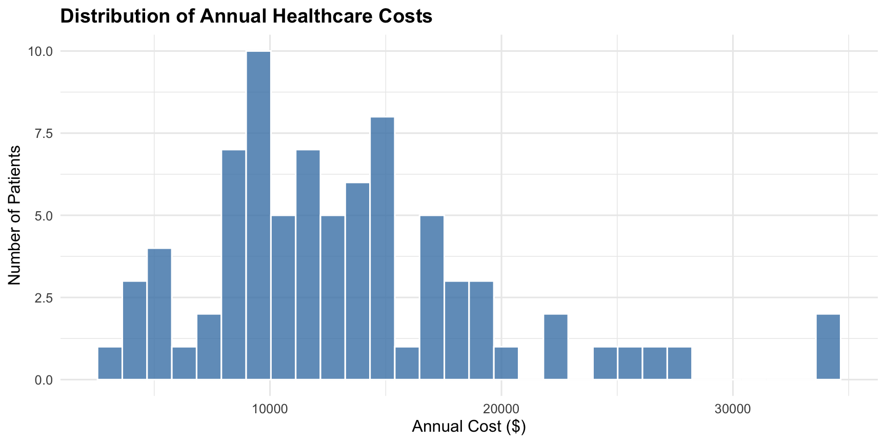
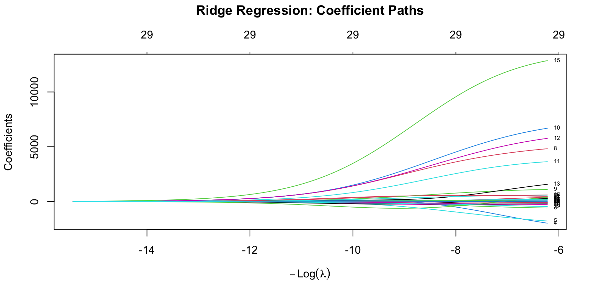
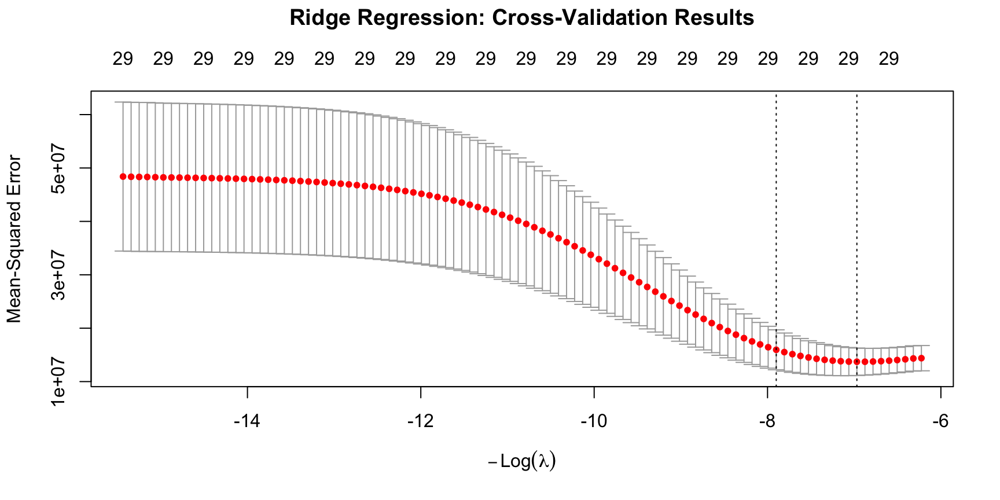
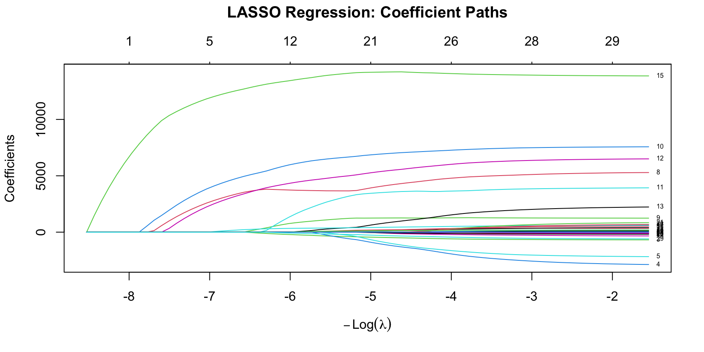
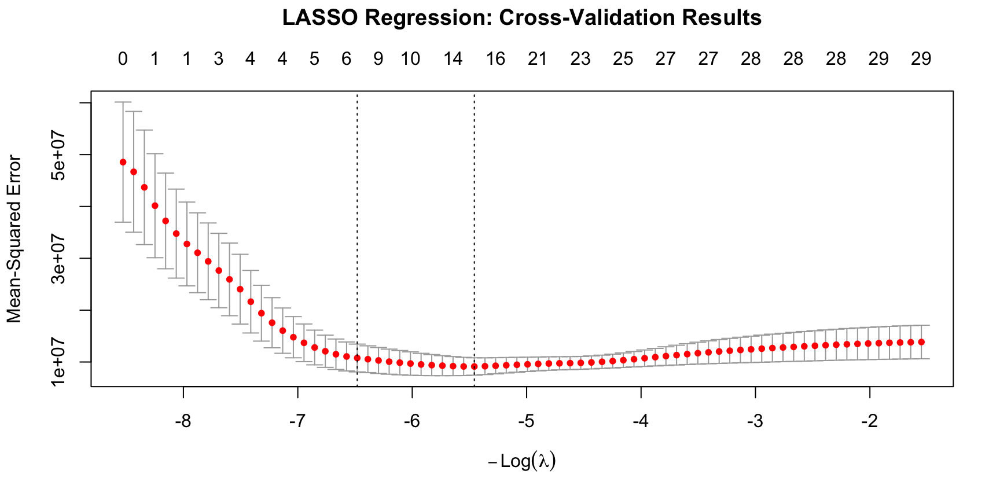
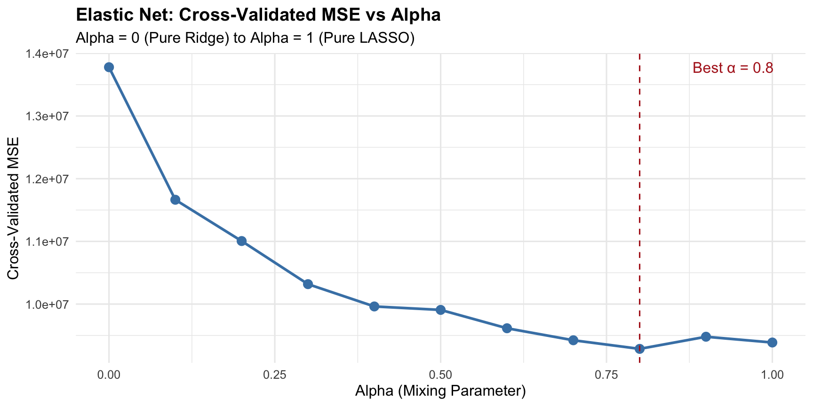

# Load required packages
library(glmnet)
library(tidyverse)
# Load the healthcare cost dataset from GitHub
healthcare_data <- read.csv("https://raw.githubusercontent.com/mba642-spring-26/mba642-spring-26.github.io/refs/heads/main/datasets/week16_healthcare_costs.csv")
# First few rows
head(healthcare_data, 4)Penalized Regression
Week 16
2026-04-29
Announcements (1/2)
- Student Feedback Tool (SFT): first 10 minutes
- Final Exam next week (5/6, from 12:00 AM to 11:59 PM)
- Lab Assignment 8: Penalized Regression
- Lab Assignment 9: Course Feedback (separate from SFT)
Announcements (2/2)
Please complete Student Feedback Tool survey! (10 minutes)
Today’s Learning Goals
By the end of this lecture, you will be able to:
- Distinguish between prediction and explanation, and when each is appropriate for healthcare decisions
- Explain why standard regression struggles with many predictors, and how penalized regression addresses this
- Compare Ridge, LASSO, and Elastic Net and choose the right method for different situations
- Build penalized regression models in R and interpret the results
- Interpret prediction results appropriately
1. Prediction vs. Explanation
A Critical Distinction
In previous courses, we used regression to explain why things happen. This module takes a different approach: prediction!
Explanation:
- e.g., Why do certain patients cost more?
- Care about individual variable effects (coefficient direction, size, and significance)
Prediction:
- e.g., How much will a patient cost?
- Care only about accuracy (outcome variable)
- Combination of variables matters
Why Prediction Matters in Healthcare
Healthcare managers need accurate forecasts in many areas:
- Budget planning: How much will our patient panel cost next year?
- Resource allocation: Which patients need care management outreach?
- Readmission prevention: Who is at highest risk of coming back?
With dozens or hundreds of variables, standard methods either break down mathematically (have no unique solutions; not estimable) or produce unreliable forecasts. Penalized regression addresses this.
2. Conceptual Foundations
OLS Regression Review
In linear regression, we predict \(Y\) using predictors \(X_1, X_2, \ldots, X_p\):
\[\widehat{Y} = \beta_0 + \beta_1 X_1 + \beta_2 X_2 + \cdots + \beta_p X_p\]
OLS minimizes the Sum of Squared Errors (SSE):
\[\text{Minimize: } SSE = \sum_{i=1}^{n} (Y_i - \widehat{Y}_i)^2\]
This works well when:
- Many more observations than predictors (\(n \gg p\))
- Predictors are not highly correlated
- Goal is understanding relationships
Problems with Standard Regression in Healthcare
- Related variables create confusion:
- Healthcare factors naturally cluster (e.g., diabetes, hypertension, obesity), and OLS can’t determine which truly drives the outcome.
- Too many variables, too few observations:
- Hundreds of predictors (diagnoses, medications, labs) but limited patients.
- The model “memorizes” your data (overfitting) and fails on new patients.
- Hard to identify what’s important:
- OLS uses every variable, even irrelevant ones.
- Clinicians can’t use hundreds of factors to make decisions.
The Solution: Penalized Regression
Modify the OLS objective by constraining coefficients:
\[\text{Minimize: } SSE + \lambda \times \text{Penalty}\]
The goal is to find coefficients that balance between prediction accuracy (SSE) and penalty for model complexity (Penalty).
- Without a penalty (OLS): chases the lowest training error → coefficients can grow as large as needed → fits noise → high variance
- Adding a penalty (λ × Penalty): pulls coefficients toward zero → simpler, more stable model
- The optimal balance: slightly worse fit on training data, better predictions on new patients
The Role of Lambda (λ)
The tuning parameter λ controls how much we penalize:
- λ = 0: No penalty → equals OLS
- Small λ: Light penalty → close to OLS
- Large λ: Heavy penalty → coefficients shrunk toward zero
- λ → ∞: All coefficients forced to zero (except intercept)
In penalized regression, we need to choose λ carefully.
- Too small → don’t solve our problems.
- Too large → throw away useful information.
3. Penalized Regression Models
Three Methods We’ll Cover
All three modify OLS by adding a penalty to the objective function, but they differ in what kind of penalty it uses:
- Ridge (L2 penalty): shrinks all coefficients toward zero; keeps every variable
- LASSO (L1 penalty): shrinks and sets some coefficients exactly to zero (feature selection)
- Elastic Net (L1 + L2): blends Ridge and LASSO; useful when predictors are correlated and you want feature selection
We’ll walk through each one, then compare them.
Ridge Regression: The L2 Penalty
Ridge adds a penalty based on squared coefficients:
\[\text{Minimize: } \sum_{i=1}^{n} (Y_i - \widehat{Y}_i)^2 + \lambda \sum_{j=1}^{p} \beta_j^2\]
Key behaviors:
- Shrinks all coefficients toward zero, but never to exactly zero
- Larger coefficients are shrunk more than smaller ones
- Handles correlated predictors smoothly by distributing effects across related variables (not inflating one and zeroing out others)
Visual Understanding: Constraint Regions

- Ridge (circle; Right): Solution rarely lands on an axis → keeps all variables
- LASSO (diamond; Left): Sharp corners on axes → coefficients can be exactly zero
LASSO Regression: The L1 Penalty
LASSO adds a penalty based on absolute values of coefficients:
\[\text{Minimize: } \sum_{i=1}^{n} (Y_i - \widehat{Y}_i)^2 + \lambda \sum_{j=1}^{p} |\beta_j|\]
- LASSO can eliminate variables entirely by setting coefficients to exactly zero (automatic feature selection).
- The sharp corners of the L1 constraint region make it possible for the optimal solution to land exactly on an axis, where one or more coefficients are zero.
Ridge vs. LASSO: Key Trade-offs
Ridge (L2)
- ✅ Handles correlated predictors
- ✅ Stable coefficient estimates
- ❌ Keeps all variables, so often hard to interpret
- Best for: prediction with correlated data
LASSO (L1)
- ✅ Automatic feature selection
- ✅ Interpretable, sparse models
- ❌ Unstable with correlated predictors
- ❌ May discard useful info
- Best for: identifying key predictors
Elastic Net: Best of Both Worlds
Elastic Net combines L1 and L2 penalties:
\[\text{Minimize: } \sum_{i=1}^{n} (Y_i - \widehat{Y}_i)^2 + \lambda \left[ \alpha \sum_{j=1}^{p} |\beta_j| + (1-\alpha) \sum_{j=1}^{p} \beta_j^2 \right]\]
- α = 1: Pure LASSO
- α = 0: Pure Ridge
- 0 < α < 1: Elastic Net blend
Elastic Net keeps or removes groups of related variables together, rather than making arbitrary choices among them.
Comparing the Three Methods
| Criterion | Ridge | LASSO | Elastic Net |
|---|---|---|---|
| Penalty | L2 (squared) | L1 (absolute) | Both |
| Feature selection | No | Yes | Yes |
| Correlated predictors | Excellent | Unstable | Good |
| Tuning parameters | 1 (λ) | 1 (λ) | 2 (λ and α) |
| Best for | Correlated, all relevant | Sparse, uncorrelated | General use |
Choosing Lambda: Cross-Validation
We can’t pick the λ that works best on current patients. We need one that also works on new patients.
Solution: k-Fold Cross-Validation
- Divide the data into 10 folds (groups)
- For each λ: train on 9 folds, test on the 10th. Repeat 10 times.
- Pick the λ with the lowest average error

Two options: lambda.min (best accuracy) vs. lambda.1se (simplest model within 1 SE of minimum). We’ll use lambda.1se.
4. Hands-On Implementation with R
The Case: Predicting Healthcare Costs
Problem: A health insurance company needs to predict annual healthcare spending for 80 patients from a small specialty clinic.
Predictors (total 29 predictors):
- 17 clinically meaningful: demographics, socioeconomic, health behaviors, chronic conditions, prior utilization
- 12 administrative/incidental: floor number, room temperature, chart color, etc.
Challenge: With only 80 patients and 29 predictors (many incidental, some correlated), OLS will overfit. Penalized regression should help.
Loading the Dataset
Let’s load the dataset and required packages:
Loading the Dataset
patient_id age female income_level has_insurance smoker bmi exercise_days
1 1 63 1 1 0 0 29.6 5
2 2 39 1 4 1 0 28.7 2
3 3 57 0 1 1 0 35.2 2
4 4 54 1 5 0 0 32.4 2
diabetes hypertension heart_disease copd depression arthritis ed_visits
1 0 1 0 0 0 0 1
2 0 0 0 0 0 0 0
3 0 1 0 0 0 1 0
4 0 1 0 0 0 0 0
hospitalizations physician_visits num_medications annual_cost chart_id_even
1 0 8 5 15097.99 0
2 0 4 5 10629.07 1
3 0 3 2 11450.44 0
4 0 5 2 5344.11 1
admit_weekday floor_number room_has_window physician_id visit_month
1 1 7 0 5 1
2 1 3 1 6 6
3 3 7 0 3 8
4 2 8 0 9 4
parking_lot_used nurse_station bed_number_odd chart_color meal_preference
1 2 1 0 4 5
2 3 4 0 4 2
3 1 2 0 4 1
4 1 3 0 2 1
room_temperature
1 71
2 72
3 72
4 73Variables in the Dataset
Here’s a quick reference for each variable, grouped by category:
| Variable | Category | Description |
|---|---|---|
| patient_id | ID | Unique patient identifier |
| annual_cost | Outcome | Annual healthcare cost in dollars (target) |
| age | Demographics | Patient age in years |
| female | Demographics | 1 = female, 0 = male |
| income_level | Socioeconomic | Income bracket (1 = lowest, 5 = highest) |
| has_insurance | Socioeconomic | 1 = has health insurance, 0 = uninsured |
| smoker | Health behavior | 1 = current smoker, 0 = nonsmoker |
| bmi | Health behavior | Body mass index |
| exercise_days | Health behavior | Days of exercise per week |
| diabetes | Chronic condition | 1 = has diabetes |
| hypertension | Chronic condition | 1 = has hypertension |
| heart_disease | Chronic condition | 1 = has heart disease |
| copd | Chronic condition | 1 = has COPD (lung disease) |
| depression | Chronic condition | 1 = has depression |
| arthritis | Chronic condition | 1 = has arthritis |
| ed_visits | Prior utilization | # emergency department visits (past year) |
| hospitalizations | Prior utilization | # hospitalizations (past year) |
| physician_visits | Prior utilization | # physician office visits (past year) |
| num_medications | Prior utilization | # prescribed medications |
| chart_id_even | Administrative | 1 if chart ID is even |
| admit_weekday | Administrative | Weekday of admission (1–5) |
| floor_number | Administrative | Hospital floor (2–8) |
| room_has_window | Administrative | 1 = room has a window |
| physician_id | Administrative | Attending physician ID (1–12) |
| visit_month | Administrative | Month of visit (1–12) |
| parking_lot_used | Administrative | Parking lot used (1–4) |
| nurse_station | Administrative | Nurse station assigned (1–6) |
| bed_number_odd | Administrative | 1 if bed number is odd |
| chart_color | Administrative | Chart color category (1–4) |
| meal_preference | Administrative | Meal preference category (1–5) |
| room_temperature | Administrative | Room temperature (°F) |
Cost Distribution
Before we model anything, it’s worth knowing what we’re predicting. Let’s look at how annual_cost is distributed across our 80 patients.
Code
ggplot(healthcare_data, aes(x = annual_cost)) +
geom_histogram(bins = 30, fill = "steelblue", color = "white", alpha = 0.8) +
labs(
title = "Distribution of Annual Healthcare Costs",
x = "Annual Cost ($)",
y = "Number of Patients"
) +
theme_minimal(base_size = 12) +
theme(plot.title = element_text(face = "bold"))
Figure 1
Right-skewed pattern typical of healthcare data: most patients have moderate costs, but a small number have very expensive care.
Data Preparation
Now we split the data into a training set (to fit the model; 70%) and a test set (to evaluate it on unseen patients; 30%), and convert the predictors into the matrix format that glmnet requires.
Code
set.seed(2026) # set a seed for reproducibility
n <- nrow(healthcare_data) # number of patients
# Split into training (70%) and test (30%) sets
train_index <- sample(1:n, size = 0.7 * n)
train_data <- healthcare_data[train_index, ]
test_data <- healthcare_data[-train_index, ]
# Define predictor variables (all except patient_id and annual_cost)
predictor_vars <- healthcare_data |>
select(-patient_id, -annual_cost) |>
names()
# Create matrix format required by glmnet
x_train <- as.matrix(train_data[, predictor_vars])
y_train <- train_data$annual_cost
x_test <- as.matrix(test_data[, predictor_vars])
y_test <- test_data$annual_cost- 56 patients in training
- 24 patients in test
- 29 predictors (17 clinically meaningful + 12 administrative)
Note: glmnet requires matrix format and automatically standardizes predictors.
Baseline: OLS Regression
Before trying anything fancy, let’s establish a baseline by fitting plain OLS, and check its performance.
OLS Test Set RMSE: $5,729.64
This represents the average prediction error in dollars. Can penalized methods perform better?
Ridge Regression: Fitting
Let’s start with Ridge. All three penalized models in this lecture use the glmnet package, a single function (glmnet()) handles Ridge, LASSO, and Elastic Net, controlled by the alpha argument:
alpha = 0→ Ridgealpha = 1→ LASSO0 < alpha < 1→ Elastic Net
Ridge: Coefficient Paths
To see how Ridge behaves, let’s plot how each coefficient evolves as λ grows: this is called a coefficient path.

Figure 2
As λ increases (left), all coefficients shrink toward zero but none reach exactly zero.
Ridge: Cross-Validation
- Now let’s use 10-fold cross-validation to find the λ that gives the best generalization.
- The
cv.glmnet()function does this for us in one call — same arguments asglmnet(), plusnfolds = 10to specify the number of folds.
Ridge: CV Results
Plotting the CV object shows the average prediction error across all candidate λ values.

Figure 3
Two dashed lines mark lambda.min (best accuracy) and lambda.1se.
Ridge: Coefficients & Performance
With our chosen λ in hand, let’s check how many variables Ridge keeps and how well it predicts on the test set.
- Ridge RMSE: $3,958.84 (30.9% improvement over OLS)
- It keeps all 29 variables (no feature selection)
LASSO Regression: Fitting
- Now let’s switch to LASSO
- Same
glmnet()function, just changealpha = 0(Ridge) toalpha = 1(LASSO) - Everything else stays the same
LASSO: Coefficient Paths
Let’s plot the coefficient paths the same way we did for Ridge, but watch what happens as λ grows.

Figure 4
Unlike Ridge, LASSO paths hit exactly zero; this is feature selection!
LASSO: Cross-Validation
- As with Ridge, we use 10-fold CV to pick the best λ
- Same
cv.glmnet()function, just changealpha = 0(Ridge) toalpha = 1(LASSO); keepnfolds = 10
LASSO: CV Results
Plotting the CV object shows the same error curve as Ridge.

Figure 5
Numbers at top show how many variables remain at each λ. As λ increases, LASSO eliminates more variables.
LASSO: Feature Selection
Let’s see which variables LASSO actually kept (non-zero coefficients) at our chosen λ.
(Intercept) income_level diabetes hypertension
9440.52182 -41.86463 3653.40070 143.35222
heart_disease depression hospitalizations num_medications
5117.10396 3596.63384 12857.85555 248.86887 LASSO automatically identifies the most important predictors.
LASSO: Test Set Performance
Did LASSO’s slimmer model pay off in prediction accuracy? Let’s check the test-set RMSE and compare to OLS.
LASSO RMSE: $3,322 (42% improvement over OLS)
Competitive accuracy with far fewer variables; the power of automatic feature selection!
Elastic Net: Tuning Alpha
Elastic Net has two parameters to tune: λ (penalty strength) and α (Ridge–LASSO mix). First, we sweep across α values to find the best blend.
alpha_grid <- seq(0, 1, by = 0.1)
elastic_results <- data.frame(
alpha = alpha_grid, lambda_1se = NA, mse_1se = NA, n_features = NA
)
fold_id <- sample(1:10, size = length(y_train), replace = TRUE)
for (i in seq_along(alpha_grid)) {
cv_fit <- cv.glmnet(x = x_train, y = y_train, alpha = alpha_grid[i], foldid = fold_id)
elastic_results$lambda_1se[i] <- cv_fit$lambda.1se
idx_1se <- which(cv_fit$lambda == cv_fit$lambda.1se)
elastic_results$mse_1se[i] <- cv_fit$cvm[idx_1se]
coef_temp <- coef(cv_fit, s = "lambda.1se")
elastic_results$n_features[i] <- sum(coef_temp != 0) - 1
}
best_alpha <- elastic_results$alpha[which.min(elastic_results$mse_1se)]Best alpha: 0.8 (0 = pure Ridge, 1 = pure LASSO)
Elastic Net: Alpha Visualization
Plotting CV error against α makes the optimal blend clear at a glance.

Figure 6
Elastic Net: Final Model
With the best α chosen, we refit Elastic Net and evaluate it on the test set.
elastic_cv <- cv.glmnet(x = x_train, y = y_train,
alpha = best_alpha, nfolds = 10)
elastic_coef <- coef(elastic_cv, s = "lambda.1se")
n_features_elastic <- sum(elastic_coef != 0) - 1
elastic_pred <- predict(elastic_cv, s = "lambda.1se", newx = x_test)
elastic_mse <- mean((y_test - elastic_pred)^2)
elastic_rmse <- sqrt(elastic_mse)
improvement_elastic <- (ols_rmse - elastic_rmse) / ols_rmse * 100
Elastic Net RMSE: $3,320.14 using 9 features (42.1% improvement over OLS)
Model Comparison
Now let’s put all four models, OLS, Ridge, LASSO, Elastic Net, side by side and see which one wins.
| Model | RMSE | MSE | Features | Improvement |
|---|---|---|---|---|
| OLS | 5729.64 | 32828742 | 29 | 0% |
| Ridge | 3958.84 | 15672433 | 29 | 30.91% |
| LASSO | 3322.13 | 11036534 | 7 | 42.02% |
| Elastic Net | 3320.14 | 11023337 | 9 | 42.05% |
Coefficient Comparison
| Variable | OLS | Ridge | LASSO | ElasticNet |
|---|---|---|---|---|
| hospitalizations | 13833.13 | 9851.29 | 12857.86 | 13124.30 |
| heart_disease | 7600.26 | 4684.57 | 5117.10 | 5703.97 |
| depression | 6540.37 | 4085.68 | 3596.63 | 4147.10 |
| diabetes | 5341.06 | 3714.57 | 3653.40 | 3744.90 |
| copd | 3960.99 | 2641.15 | 0.00 | 909.24 |
| has_insurance | -2969.70 | -580.12 | 0.00 | 0.00 |
| arthritis | 2304.01 | 530.90 | 0.00 | 0.00 |
| smoker | -2227.06 | -1012.80 | 0.00 | 0.00 |
| hypertension | 1229.64 | 796.40 | 143.35 | 629.52 |
| room_has_window | 892.80 | -374.13 | 0.00 | 0.00 |
| bed_number_odd | 721.00 | 528.59 | 0.00 | 0.00 |
| income_level | -690.80 | -374.86 | -41.86 | -176.89 |
| num_medications | 616.07 | 466.08 | 248.87 | 323.72 |
| room_temperature | -615.91 | -268.82 | 0.00 | -63.27 |
| ed_visits | 548.17 | 95.16 | 0.00 | 0.00 |
| exercise_days | 416.64 | -49.74 | 0.00 | 0.00 |
| chart_id_even | -354.51 | -194.64 | 0.00 | 0.00 |
| female | 330.16 | 575.25 | 0.00 | 0.00 |
| visit_month | 202.09 | 130.09 | 0.00 | 0.00 |
| nurse_station | -184.60 | -234.57 | 0.00 | 0.00 |
| chart_color | 182.82 | 85.93 | 0.00 | 0.00 |
| floor_number | -158.07 | -47.91 | 0.00 | 0.00 |
| parking_lot_used | -140.03 | -293.23 | 0.00 | 0.00 |
| physician_visits | 113.13 | 107.01 | 0.00 | 0.00 |
| admit_weekday | 103.37 | -25.69 | 0.00 | 0.00 |
| bmi | -70.62 | -53.56 | 0.00 | 0.00 |
| age | -65.01 | -15.01 | 0.00 | 0.00 |
| physician_id | 21.84 | 80.35 | 0.00 | 0.00 |
| meal_preference | 14.71 | 10.74 | 0.00 | 0.00 |
5. Practice Activity
Practice: Predicting Hospital Length of Stay
Problem: Metropolitan General Hospital (400 beds) wants to predict each patient’s length of stay (in days) at the moment of admission, so the operations team can plan bed capacity, schedule staffing, and start discharge planning early.
Predictors (total 34 predictors):
- Clinically meaningful: age, chronic conditions, prior admissions, admission source, etc.
- Administrative/incidental: floor number, chart color, room temperature, etc.
Challenge: With only 150 admissions and 34 predictors (many incidental, some correlated), OLS will likely overfit. Use Ridge, LASSO, and Elastic Net to see which method predicts length of stay best and which predictors really matter.
Practice: Load Data
Let’s start by loading the length-of-stay dataset and taking a quick peek at its structure.
age is_male admitted_from_er admitted_weekend admitted_evening is_surgical
1 70 0 1 0 0 1
2 45 0 0 0 0 1
3 64 1 0 0 1 1
4 61 0 1 0 0 0
is_planned num_conditions num_medications abnormal_labs required_oxygen
1 0 4 5 1 0
2 1 2 4 0 0
3 0 2 4 0 0
4 0 1 3 0 0
required_monitoring prior_admissions prior_er_visits lives_alone
1 1 0 3 0
2 0 0 1 0
3 0 1 0 1
4 0 0 0 0
distance_from_hospital has_primary_doctor has_medicaid rural_residence
1 16 0 0 0
2 17 1 0 0
3 14 1 0 1
4 13 1 0 0
length_of_stay patient_id_even admitted_weekday floor_number room_has_window
1 14.986729 0 2 4 1
2 5.362435 1 1 6 0
3 6.957362 0 4 5 0
4 6.875484 0 2 4 1
physician_id admission_month parking_lot_used registration_desk nurse_station
1 3 3 1 1 3
2 9 4 4 3 4
3 12 3 4 2 5
4 1 6 2 3 2
bed_number_odd admission_hour chart_color visiting_hours meal_preference
1 1 4 4 2 4
2 0 15 2 1 1
3 1 9 4 1 2
4 1 6 1 1 5
room_temperature
1 72
2 72
3 72
4 72Practice: Variables in the Dataset
Here’s a quick reference for each variable, grouped by category:
| Variable | Category | Description |
|---|---|---|
| length_of_stay | Outcome | Days in hospital (target) |
| age | Demographics | Patient age in years |
| is_male | Demographics | 1 = male, 0 = female |
| admitted_from_er | Admission | 1 = came through emergency department |
| admitted_weekend | Admission | 1 = admitted Saturday or Sunday |
| admitted_evening | Admission | 1 = admitted after 6 pm |
| is_surgical | Admission | 1 = surgical admission, 0 = medical |
| is_planned | Admission | 1 = scheduled, 0 = unplanned |
| num_conditions | Clinical severity | # of active health conditions |
| num_medications | Clinical severity | # of medications at admission |
| abnormal_labs | Clinical severity | 1 = had abnormal lab results |
| required_oxygen | Clinical severity | 1 = needed supplemental oxygen |
| required_monitoring | Clinical severity | 1 = needed continuous monitoring |
| prior_admissions | Prior utilization | # previous hospital stays |
| prior_er_visits | Prior utilization | # previous ER visits |
| lives_alone | Social | 1 = lives without family support |
| distance_from_hospital | Social | Distance from hospital (miles) |
| has_primary_doctor | Social | 1 = has a regular primary care doctor |
| has_medicaid | Social | 1 = covered by Medicaid |
| rural_residence | Social | 1 = lives in rural area |
| patient_id_even | Administrative | 1 if patient ID is even |
| admitted_weekday | Administrative | Weekday of admission (1–5) |
| floor_number | Administrative | Hospital floor (2–8) |
| room_has_window | Administrative | 1 = room has a window |
| physician_id | Administrative | Attending physician ID (1–12) |
| admission_month | Administrative | Month of admission (1–12) |
| parking_lot_used | Administrative | Parking lot used (1–4) |
| registration_desk | Administrative | Registration desk used (1–3) |
| nurse_station | Administrative | Nurse station assigned (1–6) |
| bed_number_odd | Administrative | 1 if bed number is odd |
| admission_hour | Administrative | Hour of admission (0–23) |
| chart_color | Administrative | Chart color category (1–4) |
| visiting_hours | Administrative | Visiting-hours category (1–3) |
| meal_preference | Administrative | Meal preference category (1–5) |
| room_temperature | Administrative | Room temperature (°F) |
Practice: Tasks (1/6)
First, let’s split the data into train/test. Fill in the blanks as you go.
Task 1: Split data and prepare matrices
- We will use 70% of the data for training and 30% for testing, and convert the predictors into matrix format for
glmnet.
train_idx <- sample(1:nrow(los_data), ___ * nrow(los_data))
train_los <- los_data[train_idx, ]
test_los <- los_data[-train_idx, ]
predictor_vars_los <- los_data |> select(-length_of_stay) |> names()
x_train_los <- as.matrix(train_los[, ___])
y_train_los <- ___
x_test_los <- as.matrix(test_los[, ___])
y_test_los <- ___Practice: Tasks (2/6)
Fit a baseline OLS model so we can use it as a benchmark. Fill in the blanks to complete the code.
Task 2: Fit OLS baseline
Practice: Tasks (3/6)
Now apply Ridge with cross-validation.
Task 3: Ridge regression
Practice: Tasks (4/6)
Now apply LASSO with cross-validation.
Task 4: LASSO regression
lasso_los <- cv.glmnet(x = ___, y = ___, alpha = ___, nfolds = 10)
lasso_coef_los <- coef(lasso_los, s = "lambda.1se")
# Identify selected variables
selected_vars_los <- data.frame(
variable = rownames(lasso_coef_los),
coefficient = as.vector(lasso_coef_los)
) %>%
filter(variable != "(Intercept)", coefficient != 0) %>%
arrange(desc(abs(coefficient)))
lasso_pred_los <- predict(lasso_los, s = "lambda.1se", newx = x_test_los)
lasso_rmse_los <- sqrt(mean((y_test_los - lasso_pred_los)^2))Practice: Tasks (5/6)
Finally, let’s fit Elastic Net (tuning both α and λ).
Task 5: Elastic Net (tune α and fit)
# Tune alpha
alpha_grid <- seq(0, 1, by = 0.2)
elastic_results_los <- data.frame(alpha = alpha_grid, rmse_cv = NA)
fold_id <- sample(1:10, length(y_train_los), replace = TRUE)
for (i in seq_along(alpha_grid)) {
cv_fit <- cv.glmnet(x_train_los, y_train_los, alpha = alpha_grid[i], foldid = fold_id)
idx <- which(cv_fit$lambda == cv_fit$lambda.1se)
elastic_results_los$rmse_cv[i] <- sqrt(cv_fit$cvm[idx])
}
best_alpha_los <- elastic_results_los$alpha[which.min(elastic_results_los$rmse_cv)]
# Fit with best alpha and evaluate
elastic_los <- cv.glmnet(x_train_los, y_train_los, alpha = ___, nfolds = 10)
elastic_pred_los <- predict(elastic_los, s = "lambda.1se", newx = x_test_los)
elastic_rmse_los <- sqrt(mean((y_test_los - ___)^2))Practice: Tasks (6/6)
Let’s compare the performance of all four models.
Task 6: Compare all four models
Practice: Interpretation Questions
- Which model performed best? Why do you think this is?
- Which variables did LASSO keep? Do the surviving predictors make intuitive sense for hospital length of stay?
- What was the optimal α? Closer to Ridge (0) or LASSO (1)?
- Which model would you recommend implementing? Consider both accuracy and operational feasibility.
- Based on your recommended model, what are the top 3 predictors? Do they make intuitive sense for hospital operations?
6. Summary
Three Methods at a Glance
| Method | Penalty | Feature selection | Tuning | Best for |
|---|---|---|---|---|
| Ridge | L2 | No (keeps all) | 1 (λ) | Correlated predictors, all relevant |
| LASSO | L1 | Yes (zeros out) | 1 (λ) | Sparse, interpretable models |
| Elastic Net | L1 + L2 | Yes | 2 (λ + α) | Feature selection with correlation |
When unsure, start with Elastic Net and let cross-validation decide the optimal balance.
Key Takeaways
- Penalized regression trades a small amount of bias for a large reduction in variance
- Two parameters control the penalty: α selects the type (0 = Ridge, 1 = LASSO, in between = Elastic Net); λ selects the strength. Both must be tuned with cross-validation and tested on a held-out test dataset.
- LASSO performs automatic feature selection by setting some coefficients exactly to zero. Ridge shrinks but keeps all variables; Elastic Net does both.
- Penalized regression is for prediction, not causal inference.
Weekly Assignments (1/2)
- Week 16 Reflection: Please share your thoughts on the lecture
- 3 interesting things
- 3 confusing things
- Lab Assignment 8: Penalized Regression
Both are due by 11:59pm on Sunday, May 3.
Weekly Assignments (2/2)
- Lab Assignment 9:
Among the topics we covered this semester:
- Three topics that you found MOST interesting or helpful (3 points)
- Three topics that you found LEAST interesting or helpful (3 points)
- Two topics from this course you would like to see covered in more depth (2 points)
- Two topics not currently covered in this course that you would like to see added (2 points)
It is also due by 11:59pm on Sunday, May 3.
Next Week (May 6)
- No lecture: final exam day
- Exam posted: 12:00 AM on 5/6 (Wednesday) on Canvas (Week 17 page)
- Available until 11:59 PM of the day
Final Exam Details
- Format: Quarto (.qmd)
- Fill-in-the-blank code + interpretation questions (6 sections)
- Total Points: 50 points | Duration: All day
- Policy: Open-book, open-note (all course materials allowed)
- Submission: Upload completed
.qmdto Canvas (Final Exam under Assignments) - Coverage: Weeks 11-16 (linear regression, logistic regression, conjoint analysis, and penalized regression)
Final Exam: Grading & Expectations
- Grading breakdown:
- Code correctness (50%) | Completeness (30%) | Interpretation (20%)
- Interpretation expectations: Reference specific statistics and connect to healthcare decisions
- Good: “The effect of age on length of stay is significantly positive (β = 0.42, p < 0.001): as age increases by one year, predicted length of stay rises by 0.42 days, holding other factors constant. This suggests discharge planning should start earlier for older admissions.”
- Too vague: “Age has a significant effect on length of stay.”
- Collaboration: Individual work only. AI tools are permitted, but you must understand and write your own interpretations (i.e., do not copy and paste AI-generated answers)
References and Additional Resources
- Hoerl, A. E., & Kennard, R. W. (1970). Ridge regression: Biased estimation for nonorthogonal problems.
- Tibshirani, R. (1996). Regression shrinkage and selection via the lasso.
- Zou, H., & Hastie, T. (2005). Regularization and variable selection via the elastic net.
- Etzioni, R., Mandel, M., & Gulati, R. (2020). Statistics for Health Data Science: An Organic Approach. Springer.
- UC Business Analytics R Programming Guide: Regularized Regression
Week 16 | Penalized Regression